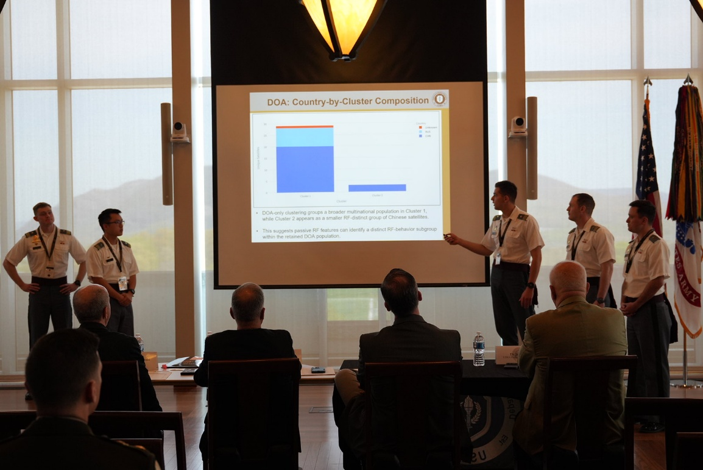
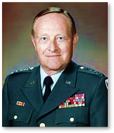
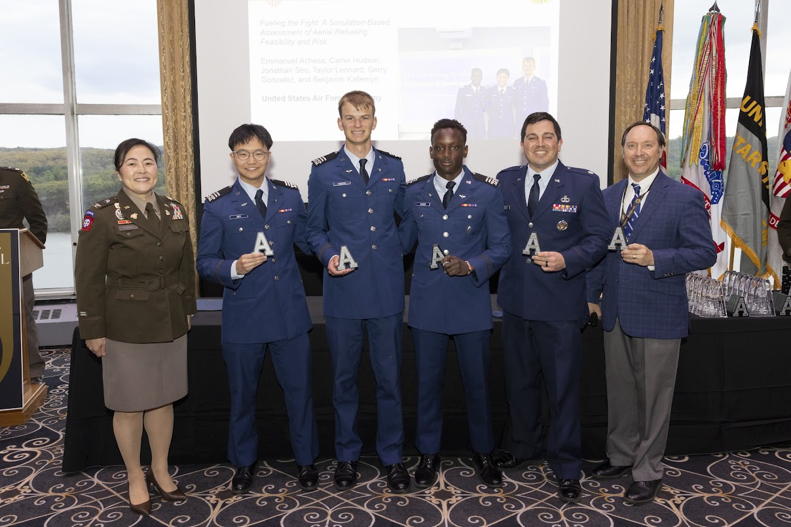
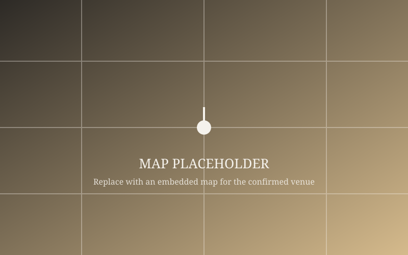
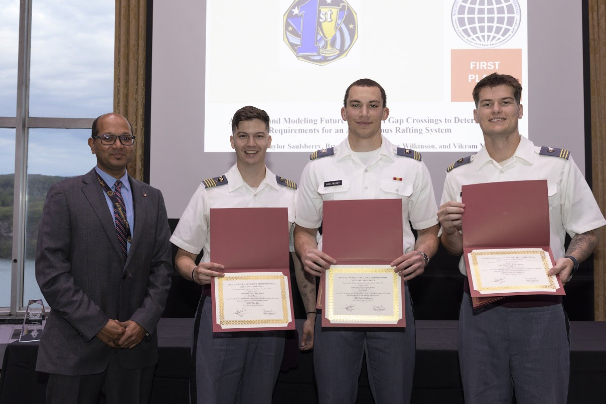

Department of Systems Engineering · USMA
GEN Donald R. Keith Memorial
Capstone Conference
Undergraduate researchers present two semesters of capstone work in engineering management, systems engineering, operations research, and systems and decision science to sponsors, judges, and the West Point community.
April 29, 2027 · West Point, New York
About the Center
Systems Design and Analysis Center
The mission of the Systems Design and Analysis Center (SDAC) at the United States Military Academy is to focus high-quality research, information dissemination, and professional practice on the design and analysis of next-generation, complex, large-scale, interdisciplinary systems in the national defense operating environment — while serving as a vibrant hub for cadet and faculty intellectual development.
Teams of 4–5 students work with a faculty member for two semesters to solve real, complex problems faced by their research sponsor, spanning engineering management, systems engineering, operations research, and systems and decision science. That research culminates each spring at the GEN Donald R. Keith Memorial Capstone Conference, held at West Point.


In Honor Of
General Donald R. Keith
1927–2004
A 1949 USMA graduate, General Keith commanded field artillery units at every level, led research and analysis efforts during the Vietnam War, and directed the Army's largest modernization program of its era before retiring in 1984 as Commanding General of the U.S. Army Materiel Development and Readiness Command. He went on to chair the U.S. Field Artillery Association and serve on numerous defense science boards until his passing in 2004.
The generous General Donald R. Keith endowment continues to sustain cadet education programs in the Department of Systems Engineering, and this conference is held each spring in his honor.
For Authors
Important Dates
There are no late submissions.
-
March 12, 2027
Initial Paper Submission Due
Submit your conference paper via Microsoft CMT for peer review.
-
April 4, 2027
Papers Returned to Authors
Peer review feedback is returned so authors can revise before final submission.
-
April 16, 2027
Final Paper Due
Revised, final papers are due — no extensions.
-
April 28, 2027
Proceedings Published
The Society for Industrial and Systems Engineering (SISE) publishes the conference proceedings.
-
April 29, 2027
Capstone Conference
Students present their research at West Point.
For Authors
Paper Formatting Requirements
Conference Paper
6-page limit, peer-reviewed, indexed on Google Scholar.
Conference Presentation
25 minutes, plus 10 minutes for Q&A.
Poster
Optional, presented during the poster session.
| File format | MS Word (.docx/.doc), maximum 3 MB |
|---|---|
| Page size / limit | 8.5" × 11", 6 pages maximum, no page numbers |
| Abstract | 150 words maximum |
| Margins | Left 0.75" · Right 0.75" · Top 1.25" · Bottom 0.75" |
| Title | 14pt Times New Roman, bold |
| Author block | 12pt Times New Roman |
| Section headings | 11pt Times New Roman, bold, numbered (max 3 levels) |
| Body text | 10pt Times New Roman |
| Citation style | APA, hanging-indent reference list |
| Tables & figures | Numbered and captioned, body text 9pt minimum |
| File naming | lastname.docx (or lastname1.docx, lastname2.docx for multiple submissions) |
Formatting questions: [CONTACT EMAIL]
For Attendees
Conference Day Schedule
This year's conference features 10 concurrent presentation tracks across two venues: Jefferson Hall, the West Point Library, and Mahan Hall, home to the Department of Systems Engineering.
| Time | Session | Location |
|---|---|---|
| 7:15 AM – 3:00 PM | Registration | 6th Floor, Jefferson Hall |
| 7:40 – 8:00 AM | Judges Meeting | Room 414, Jefferson Hall |
| 8:00 – 8:30 AM | Opening Remarks | Haig Room, Jefferson Hall |
| 8:45 – 9:30 AM | Session 1 (25 min + 10 min Q&A per team) | Jefferson Hall & Mahan Hall |
| 9:30 – 10:15 AM | Session 2 | Jefferson Hall & Mahan Hall |
| 10:15 – 11:00 AM | Session 3 | Jefferson Hall & Mahan Hall |
| 11:00 – 11:45 AM | Session 4 | Jefferson Hall & Mahan Hall |
| 11:45 AM – 1:00 PM | Lunch | Jefferson Hall |
| 1:00 – 1:45 PM | Session 5 | Jefferson Hall & Mahan Hall |
| 1:45 – 2:30 PM | Session 6 | Jefferson Hall & Mahan Hall |
| 3:00 – 4:00 PM | Walking Tour | 1st Floor, Jefferson Hall |
| 6:00 – 6:30 PM | Banquet Social Hour | Eisenhower Hall |
| 6:30 – 8:30 PM | Awards Ceremony & Closing Remarks | Eisenhower Hall |
Location
Venue
Jefferson Hall — West Point Library
Mahan Hall — Department of Systems Engineering
Eisenhower Hall — Banquet Social Hour, Awards Ceremony & Closing Remarks
West Point, NY 10996
Jefferson Hall serves as the main venue for the conference, with additional presentation tracks held nearby in Mahan Hall. The day concludes with a banquet social hour and awards ceremony at Eisenhower Hall.
Guests must access West Point through the Visitors Center, where visitor passes are issued before proceeding onto campus.


Submit Your Paper
All capstone conference papers are submitted and peer-reviewed through Microsoft's Conference Management Toolkit (CMT).
Submit via CMTThe Microsoft CMT service was used for managing the peer-reviewing process for this conference. This service was provided for free by Microsoft and they bore all expenses, including costs for Azure cloud services as well as for software development and support.

Proceedings
2026 Conference Proceedings
The Society for Industrial and Systems Engineering (SISE) publishes the conference proceedings each year. The top three papers are also published in the Industrial & Systems Engineering Review (ISER) journal.
View 2026 Proceedings